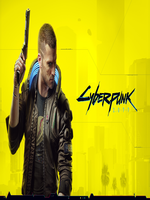
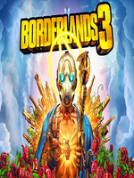
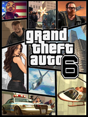

Cyberpunk 2077 is played in a first-person perspective as V,a mercenary whose voice,face, hairstyles, body type and modifications, background, and clothing are customisable. Stat categories—Body, Intelligence, Reflexes, Technical, and Cool—are influenced by the character classes that players assume, which are NetRunner (hacking), Techie (machinery), and Solo (combat). V must consult a "ripperdoc" to upgrade and purchase cyberware implants; black markets offer military-grade abilities.

Borderlands 3 is the fourth main and fifth overall entry in Gearbox Software's Borderlands game series. It was announced by Randy Pitchford, Gearbox's CEO on March 28th, 2019 and released on September 13th, 2019 for Xbox One, PlayStation 4 and PC on the Epic Games Store. The game later released for Google Stadia on December 17th, 2019, and was released on Steam for PC on March 13th, 2020.Borderlands 3 is built on Unreal Engine 4.
Forza Motorsport 5 is the sixth installment of the Forza Motorsport series. It was announced on May 21, 2013 during the Xbox One reveal.It is the first title in the series to feature laser-scanned race tracks, as well as open-wheel racing cars from fourth generation Dallara IndyCars and classic Formula One cars.Similar to its predecessor, Forza Motorsport 5 features a partnership with the BBC television show Top Gear again and includes narrations of every show host. The player will also be able to compete against the Stig's "Digital Cousin" in unique car challenges.

Gameplay focuses on an open world where the player can complete missions to progress an overall story, as well as engage in various side activities. Most of the gameplay revolves around driving and shooting, with occasional role-playing and stealth elements. The series also has elements of the earlier beat 'em up games from the 16-bit era. The games in the Grand Theft Auto series are set in fictional locales modelled after real-life cities, at various points in time from the early 1960s to the 2010s.